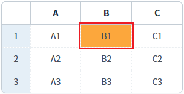
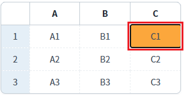
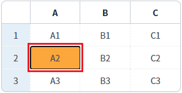
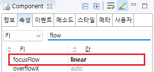

[GridView] 키보드를 이용해 포커스 이동 시 이동 범위 설정하기
1개요
GridView의 'focusFlow' 속성을 사용하여, 키 입력을 통한 셀의 포커스 이동 범위를 설정한 예제입니다.
다음 셀로 포커스를 이동하는 기본 키는 'Tab'이며 이전 셀로 포커스 이동은 키 'Shift+Tab'로 설정되어 있습니다.
'focusFlow' 속성의 설정 값에 따른 동작은 아래와 같습니다.
default: 행에서만 포커스가 이동됩니다.
linear: 행의 마지막 셀에서 Tab 키를 누르면 다음 행의 첫 번째 셀로 이동됩니다.
2구현된 기능
(기본 설정) focusFlow - default
focusFlow - linear
3예제 테스트 방법
3.1(기본 설정) focusFlow - default
예제 영역 '(기본 설정) focusFlow - default'에 구성된 GridView에서 테스트합니다.포커스 이동 범위가 행(row) 단위입니다. 행의 마지막 셀에서 키 Tab을 누르면 포커스가 이동하지 않습니다.
1
STEP 1: GridView의 'B' 컬럼의 셀을 선택합니다.
Image 1.브라우저(Chrome) 실행 예시

2
STEP 2: 셀을 선택 한 뒤 키보드 키 'Tab'을 누릅니다.
GridView의 셀 포커스가 'C' 컬럼의 셀로 이동됩니다.
Image 2.브라우저(Chrome) 실행 예시

3
STEP 3: 'C' 컬럼의 셀에서 키보드 키 'Tab'을 누릅니다.
GridView의 셀 포커스가 동일 셀에 유지됩니다.
Image 3.브라우저(Chrome) 실행 예시

3.2focusFlow - linear
예제 영역 'focusFlow - linear'에 구성된 GridView에서 테스트합니다.포커스 이동 범위가 전체 영역입니다. 행의 마지막 셀에서 키 Tab을 누르면 다음 행의 첫 번째 셀로 이동됩니다.
1
STEP 1: GridView의 'B' 컬럼의 셀을 선택합니다.
Image 4.브라우저(Chrome) 실행 예시
2
STEP 2: 셀을 선택 한 뒤 키보드 키 'Tab'을 누릅니다.
GridView의 셀 포커스가 'C' 컬럼의 셀로 이동됩니다.
Image 5.브라우저(Chrome) 실행 예시

3
STEP 3: 'C' 컬럼의 셀에서 키보드 키 'Tab'을 누릅니다.
GridView의 셀 포커스가 다음 행의 'A' 컬럼의 셀로 이동됩니다.
Image 6.브라우저(Chrome) 실행 예시

4구현 예시
4.1focusFlow 속성 설정
1
GridView의 속성을 정의합니다.
[필수] focusFlow="옵션 값"
[default: default, linear] 포커스 이동 방향 설정
(옵션 설명)
default : 행(row)에서만 포커스가 이동됩니다.
예시) focusFlow="default"
linear : 행의 마지막 셀에서 키 Tab을 누르면 다음 행의 첫 번째 셀로 이동됩니다.
예시) focusFlow="linear"
Image 7.웹스퀘어 스튜디오의 Component View - 속성 설정 예시

Example 1.Source
<!-- gridView 의 소스 본문 예시 --> <w2:gridView focusFlow="linear" dataList="data:dlt_exam"> <!-- 중략 --> </w2:gridView>
5주요 API
focusFlow